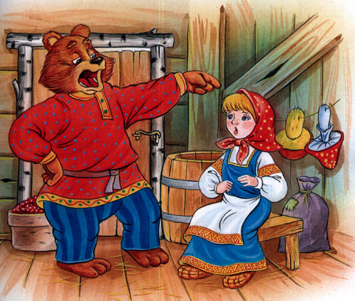
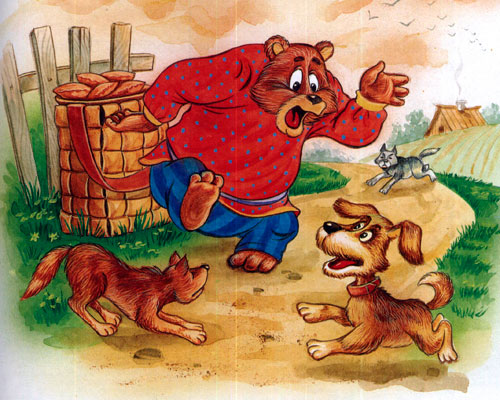

Старый солдат шёл на побывку. Притомился в пути, есть хочется. Дошёл до деревни, постучал в крайнюю избу:
- Пустите отдохнуть дорожного человека! Дверь отворила старуха.
- Заходи, служивый.
- А нет ли у тебя, хозяюшка, перекусить чего? У старухи всего вдоволь, а солдата поскупилась накормить, прикинулась сиротой.
- Ох, добрый человек, и сама сегодня ещё ничего не ела: нечего.
- Ну, нет так нет,- солдат говорит. Тут он приметил под лавкой топор.
- Коли нет ничего иного, можно сварить кашу и из топора.
Хозяйка руками всплеснула:
- Как так из топора кашу сварить?
- А вот как, дай-ка котёл.
Старуха принесла котёл, солдат вымыл топор, опустил в котёл, налил воды и поставил на огонь.
Старуха на солдата глядит, глаз не сводит.
Достал солдат ложку, помешивает варево. Попробовал.
- Ну, как? - спрашивает старуха.
- Скоро будет готова, - солдат отвечает, - жаль вот только, что посолить нечем.
- Соль-то у меня есть, посоли.
Солдат посолил, снова попробовал.
- Хороша! Ежели бы сюда да горсточку крупы! Старуха засуетилась, принесла откуда-то мешочек крупы.
- Бери, заправь как надобно. Заправил варево крупой. Варил, варил, помешивал, попробовал. Глядит старуха на солдата во все глаза, оторваться не может.
- Ох, и каша хороша! - облизнулся солдат.- Как бы сюда да чуток масла - было бы и вовсе объедение.
Нашлось у старухи и масло.
Сдобрили кашу.
- Ну, старуха, теперь подавай хлеба да принимайся за ложку: станем кашу есть!
- Вот уж не думала, что из топора эдакую добрую кашу можно сварить, - дивится старуха.
Поели вдвоем кашу. Старуха спрашивает:
- Служивый! Когда ж топор будем есть?
- Да, вишь, он не уварился,- отвечал солдат,- где-нибудь на дороге доварю да позавтракаю!
Тотчас припрятал топор в ранец, распростился с хозяйкою и пошёл в иную деревню.
Вот так-то солдат и каши поел и топор унёс!
Жил-был старик со старухою. Просит старик:
— Испеки, старуха, колобок!
— Из чего печь — то? Муки нету, — отвечает ему старуха.
— Э — эх, старуха! По коробу поскреби, по сусеку помети; авось муки и наберется.
Старуха печет колобок
Взяла старуха крылышко, по коробу поскребла, по сусеку помела, и набралось муки пригоршни с две. Замесила на сметане, изжарила в масле и положила на окошечко постудить.

Колобок на окне сидит
Колобок полежал — полежал, да вдруг и покатился — с окна на лавку, с лавки на пол, по полу да к дверям, перепрыгнул через порог в сени, из сеней на крыльцо, с крыльца — на двор, со двора за ворота, дальше и дальше.

Колобок покатился
Катится колобок по дороге, а навстречу ему заяц:
Колобок и заяц
— Колобок, колобок! Я тебя съем.
— Не ешь меня, косой зайчик! Я тебе песенку спою, — сказал колобок и запел:
Я Колобок, Колобок!
Я по коробу скребен,
По сусеку метен,
На сметане мешон,
Да в масле пряжон,
На окошке стужон;
Я от дедушки ушел,
Я от бабушки ушел,
И от тебя, зайца, не хитро уйти!
И покатился себе дальше; только заяц его и видел!
Катится колобок, а навстречу ему волк:
Колобок и волк
— Колобок, колобок! Я тебя съем!
— Не ешь меня, серый волк! Я тебе песенку спою, — сказал колобок и запел:
Я Колобок, Колобок!
Я по коробу скребен,
По сусеку метен,
На сметане мешон,
Да в масле пряжон,
На окошке стужон;
Я от дедушки ушел,
Я от бабушки ушел,
Я от зайца ушел,
И от тебя, волка, не хитро уйти!
И покатился себе дальше; только волк его и видел!
Катится колобок, а навстречу ему медведь:
— Колобок, колобок! Я тебя съем.
— Не ешь меня, косолапый! Я тебе песенку спою, — сказал колобок и запел:
Я Колобок, Колобок!
Я по коробу скребен,
По сусеку метен,
На сметане мешон,
Да в масле пряжон,
На окошке стужон;
Я от дедушки ушел,
Я от бабушки ушел,
Я от зайца ушел,
Я от волка ушел,
И от тебя, медведь, не хитро уйти!
И опять укатился, только медведь его и видел!
Катится, катится «колобок, а навстречу ему лиса:
Колобок и лиса
— Здравствуй, колобок! Какой ты хорошенький. Колобок, колобок! Я тебя съем.
— Не ешь меня, лиса! Я тебе песенку спою, — сказал колобок и запел:
— Я Колобок, Колобок!
Я по коробу скребен,
По сусеку метен,
На сметане мешон,
Да в масле пряжон,
На окошке стужон;
Я от дедушки ушел,
Я от бабушки ушел,
Я от зайца ушел,
Я от волка ушел,
И от медведя ушел,
А от тебя, лиса, и подавно уйду!
— Какая славная песенка! — сказала лиса. — Но ведь я, колобок, стара стала, плохо слышу; сядь-ка на мою мордочку да пропой еще разок погромче.
Колобок вскочил лисе на мордочку и запел ту же песню.
Колобок на носу у лисы
— Спасибо, колобок! Славная песенка, еще бы послушала! Сядь-ка на мой язычок да пропой в последний разок, — сказала лиса и высунула свой язык; колобок прыг ей на язык, а лиса — ам его! И съела колобка…
Жили-были дедушка да бабушка. Была у них внучка Машенька.
Собрались раз подружки в лес - по грибы да по ягоды. Пришли звать с собой и Машеньку.
- Дедушка, бабушка, - говорит Машенька, - отпустите меня в лес с подружками!

Дедушка с бабушкой отвечают:
- Иди, только смотри от подружек не отставай - не то заблудишься.
Пришли девушки в лес, стали собирать грибы да ягоды. Вот Машенька - деревце за деревце, кустик за кустик - и ушла далеко-далеко от подружек.
Стала она аукаться, стала их звать. А подружки не слышат, не отзываются.

Ходила, ходила Машенька по лесу - совсем заблудилась.
Пришла она в самую глушь, в самую чащу. Видит-стоит избушка. Постучала Машенька в дверь - не отвечают. Толкнула она дверь, дверь и открылась.
Вошла Машенька в избушку, села у окна на лавочку.
Села и думает:
„Кто же здесь живёт? Почему никого не видно?.." А в той избушке жил большущий медведь. Только его тогда дома не было: он по лесу ходил. Вернулся вечером медведь, увидел Машеньку, обрадовался.
- Ага, - говорит, - теперь не отпущу тебя! Будешь у меня жить. Будешь печку топить, будешь кашу варить, меня кашей кормить.

Потужила Маша, погоревала, да ничего не поделаешь. Стала она жить у медведя в избушке.
Медведь на целый день уйдёт в лес, а Машеньке наказывает никуда без него из избушки не выходить.
- А если уйдёшь, - говорит, - всё равно поймаю и тогда уж съем!
Стала Машенька думать, как ей от медведя убежать. Кругом лес, в какую сторону идти - не знает, спросить не у кого...
Думала она, думала и придумала.
Приходит раз медведь из лесу, а Машенька и говорит ему:
- Медведь, медведь, отпусти меня на денёк в деревню: я бабушке да дедушке гостинцев снесу.
- Нет, - говорит медведь, - ты в лесу заблудишься. Давай гостинцы, я их сам отнесу!

А Машеньке того и надо!
Напекла она пирожков, достала большой-пребольшой короб и говорит медведю:
- Вот, смотри: я в короб положу пирожки, а ты отнеси их дедушке да бабушке. Да помни: короб по дороге не открывай, пирожки не вынимай. Я на дубок влезу, за тобой следить буду!

- Ладно, - отвечает медведь, - давай короб! Машенька говорит:
- Выйди на крылечко, посмотри, не идёт ли дождик! Только медведь вышел на крылечко, Машенька сейчас же залезла в короб, а на голову себе блюдо с пирожками поставила.

Вернулся медведь, видит - короб готов. Взвалил его на спину и пошёл в деревню.
Идёт медведь между ёлками, бредёт медведь между берёзками, в овражки спускается, на пригорки поднимается. Шёл-шёл, устал и говорит:
Сяду на пенёк,
Съем пирожок!

А Машенька из короба:
Вижу, вижу!
Не садись на пенёк,
Не ешь пирожок!
Неси бабушке,
Неси дедушке!
- Ишь какая глазастая, - говорит медведь, - всё видит! Поднял он короб и пошёл дальше.
Шёл-шёл, шёл-шёл, остановился, сел и говорит:
Сяду на пенёк,
Съем пирожок!
А Машенька из короба опять:
Вижу, вижу!
Не садись на пенёк,
Не ешь пирожок!
Неси бабушке,
Неси дедушке!
Удивился медведь:
- Вот какая хитрая! Высоко сидит, далеко глядит! Встал и пошёл скорее.
Пришёл в деревню, нашёл дом, где дедушка с бабушкой жили, и давай изо всех сил стучать в ворота:
- Тук-тук-тук! Отпирайте, открывайте! Я вам от Машеньки гостинцев принёс.
А собаки почуяли медведя и бросились на него. Со всех дворов бегут, лают.

Испугался медведь, поставил короб у ворот и пустился в лес без оглядки.
Вышли тут дедушка да бабушка к воротам. Видят- короб стоит.
- Что это в коробе? - говорит бабушка.
А дедушка поднял крышку, смотрит и глазам своим не верит: в коробе Машенька сидит - живёхонька и здоровёхонька.
Обрадовались дедушка да бабушка. Стали Машеньку обнимать, целовать, умницей называть.

| Название сказки | Число слов | Количество знаков | Количество знаков(без пробелов) |
|---|---|---|---|
| Каша из топора | 297 | 1510 | 1808 |
| Колобок | 456 | 2144 | 2561 |
| Маша и медведь | 596 | 2948 | 3508 |